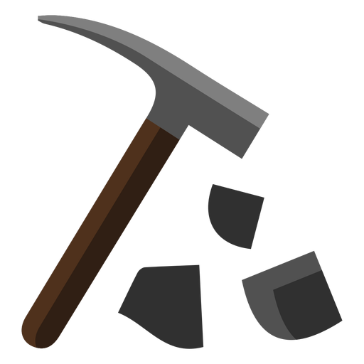

<md-toolbar color="accent">
  <span>
    
  </span>
  <span class="example-spacer"></span>
  <span>User</span>
  <md-icon class="example-icon">favorite</md-icon>
  <md-icon class="example-icon">delete</md-icon>
</md-toolbar>
